上官婉儿 · 太平公主
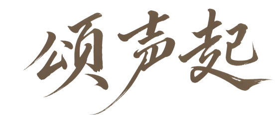
循着她们的名字，展开一卷往事。
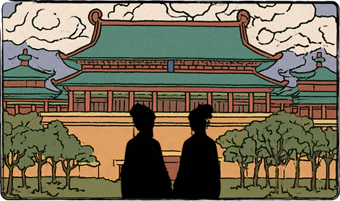
向下，展开故事 继续上次阅读公元664年起
罪臣之女
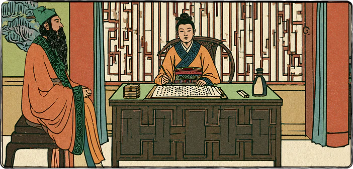
公元664年。
唐高宗李治一度想废掉皇后武则天，
于是召来宰相上官仪商议，
上官仪赞成废后，并奉命起草诏书。
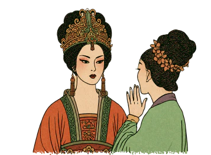
消息很快传到武则天耳中。
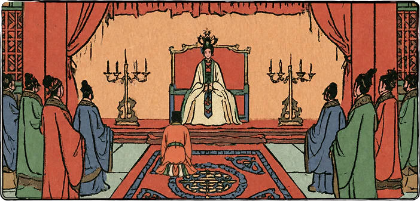
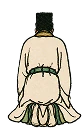
你们可知该当何罪！
不久，上官仪以谋反罪被处死，
他的儿子上官庭芝也一同获罪被杀。
但上官庭芝还留下了一个尚在襁褓中的女儿。
她的名字是……上官婉儿。
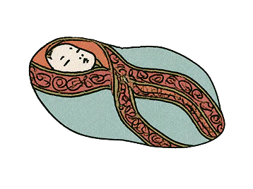
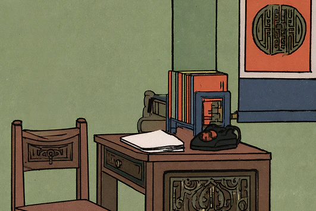
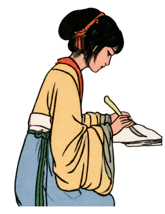
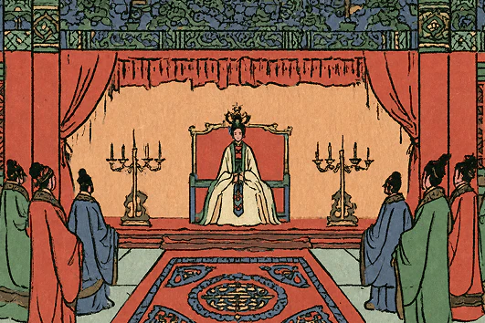
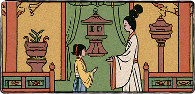
从此，婉儿摆脱在掖庭的生活，
就这样渐渐进入唐宫的权力中心。
同一座宫城
帝王之女
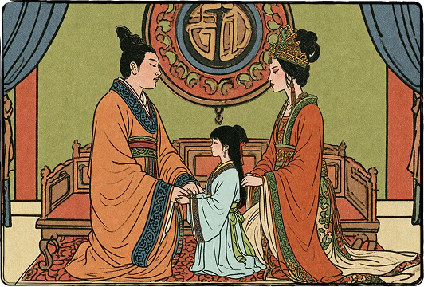
而就在同一座宫城里，还有另一个女孩。
她不需要靠才华换来进入宫廷的机会，
因为她生来便是贵族。
她的父亲，是唐高宗李治。
而她的母亲，是后来成为皇帝的武则天。
她是皇帝最宠爱的女儿之一，
也是大唐最尊贵的公主之一。
她叫……太平公主。
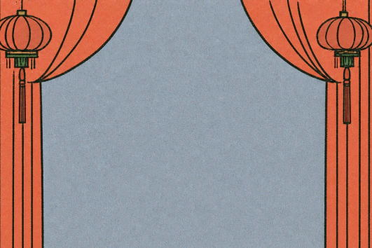
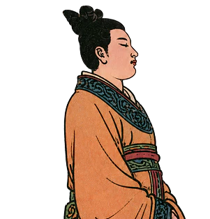
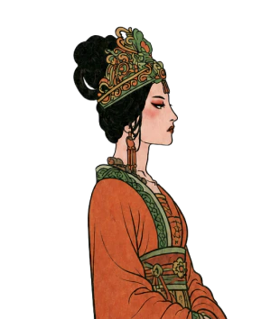
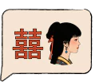
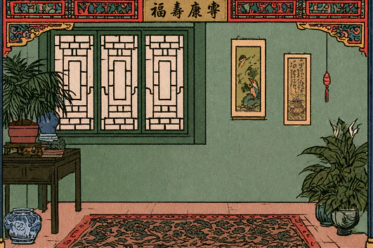
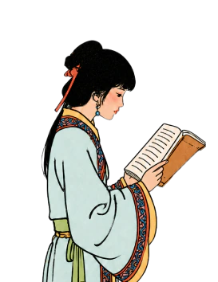
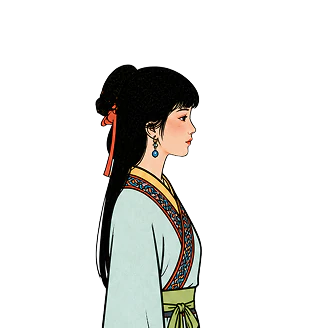
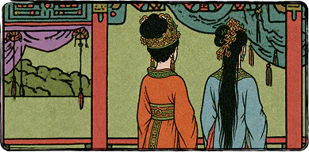
后来一些重要的事情，武则天会让太平参与商议。
太平公主开始真正走进朝廷的谋议之中。
上官婉儿与太平公主
同游共宴
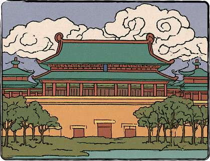
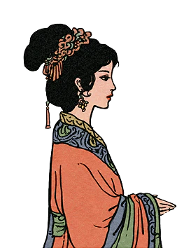
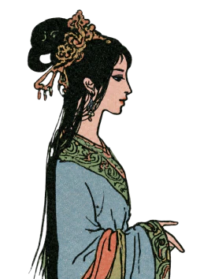
上官婉儿和太平公主。
一个是皇后亲手提拔的罪臣之女。
一个是皇后最宠爱的女儿。
她们年龄相近，长期生活在同一座宫廷，
一个掌文字，一个近权谋，自然少不了相见的时候。
再加上两人都擅长诗文，在一次次宫宴、游赏与唱和之间，也渐渐熟识起来。
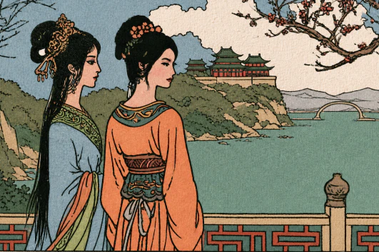
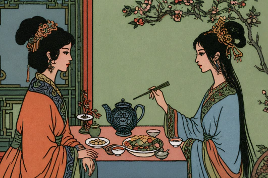
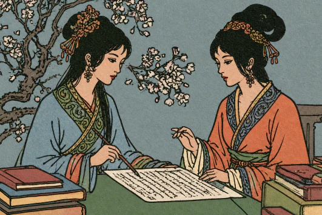
公元705年
政局相逢
公元705年，张柬之等大臣发动神龙政变。
武则天被迫退位，将皇位交还给儿子李显。
李显重新登基，是为唐中宗。武周结束，唐朝恢复。
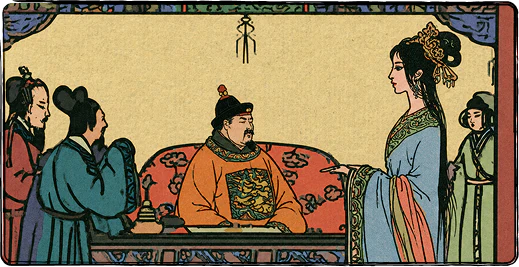
太平公主因参与政变受到封赏。
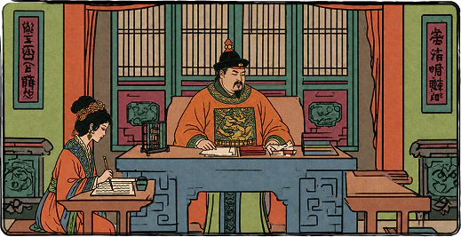
上官婉儿继续留在宫中掌管诏命，不久被封为昭容。
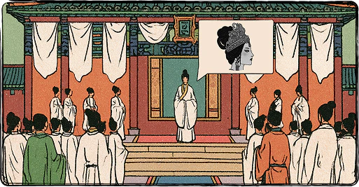
同年冬天，武则天在上阳宫去世。
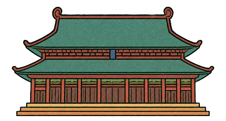
宫廷仍在运转，所有人要在新的皇帝身边
重新寻找自己的位置。
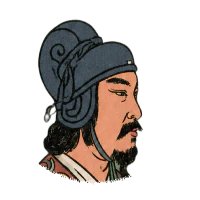
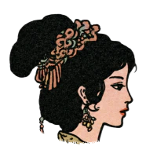
韦皇后、安乐公主、太平公主、相王李旦和掌管诏命的上官婉儿，各自拥有不同的立场。
到了中宗统治后期，皇位应当由谁继承，成为所有矛盾的中心。
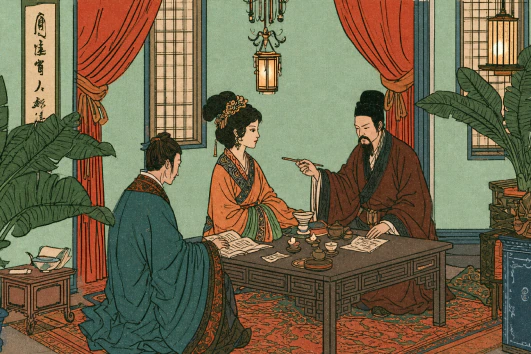
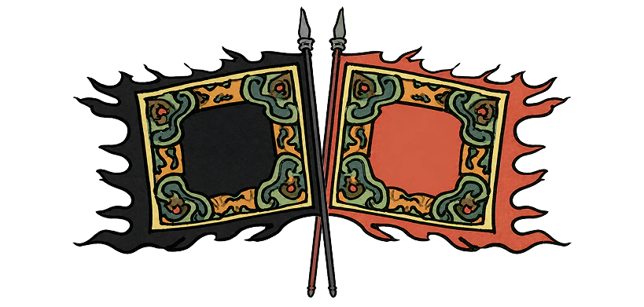
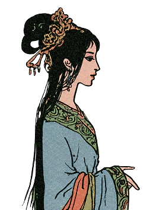
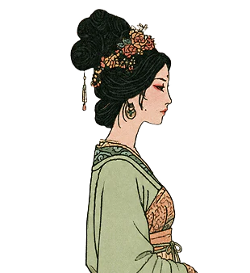
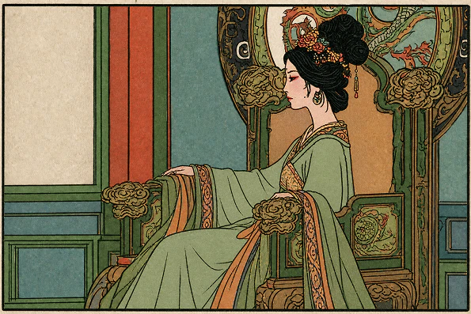
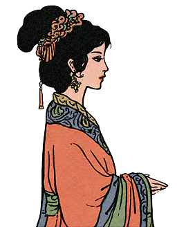
公元710年
共拟遗诏
公元710年，唐中宗李显突然去世，
原本勉强维持的平衡也随之被打破。
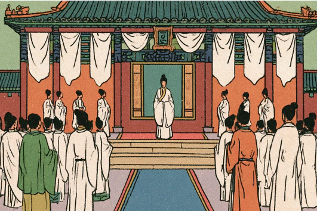
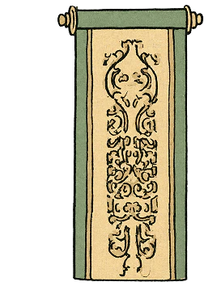
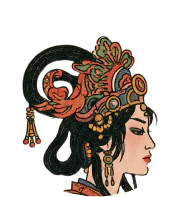
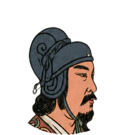
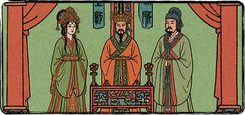
她们最终拟定的遗诏，以中宗之子李重茂继位，由韦皇后临朝，相王李旦参预政事。
年幼的新帝、韦皇后、李旦，相互制衡。
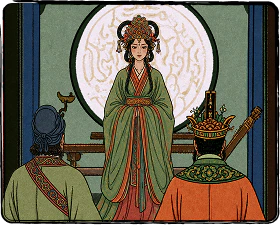
然而这份遗诏，并没有换来她们想要的平衡。
中宗死后，韦皇后的势力迅速控制了宫中。
韦氏亲党很快改变了原有安排，相王李旦没能依照遗制辅政。
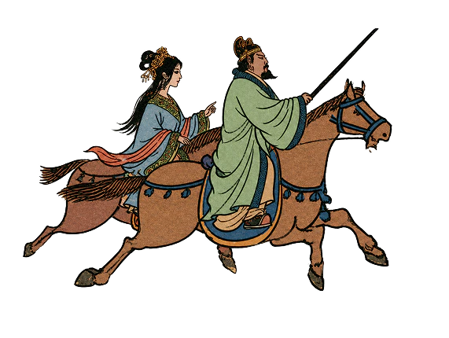
不久，太平公主与李隆基共同发动唐隆政变。
韦皇后和安乐公主被杀，李重茂也失去了皇位。
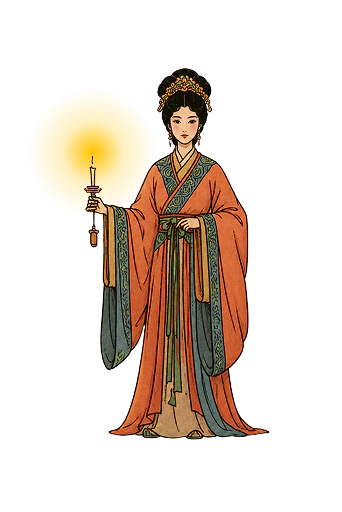
上官婉儿没有逃走。
兵刃相接的宫城里，她手持蜡烛，带领宫人迎接李隆基。
公元710年—713年
身后吊祭
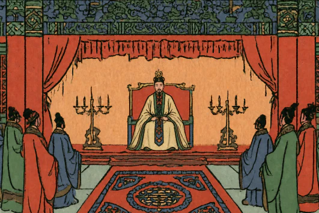

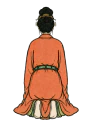
上官婉儿死后，睿宗朝恢复了她的昭容名位。太平公主随后请求朝廷收集她散失的诗文。
然而，太平与李隆基的同盟没有维持多久。
公元713年，李隆基诛杀太平公主的党羽。太平逃入山寺，三日后返回府中，被赐死于家。
此后不久，上官婉儿的墓遭到人为的大规模破坏。
墓室被毁，随葬之物散失，许多曾经存在过的痕迹也被一并抹去……
后来流传的故事里
史书中的误写
后来流传的故事里……
上官婉儿被归入韦皇后与武三思一方，成了淫乱失德、依附权势、扰乱朝政的内廷女官。
《旧唐书》写：“婉儿既与武三思淫乱。”
《新唐书》又写：“婉儿与近嬖至皆营外宅，邪人秽夫争候门下，肆狎昵，因以求剧职要官。
与崔湜乱，遂引知政事。”
太平公主则被写成贪恋权位、意图夺权，最终败亡的公主。
《资治通鉴》说她轻视年轻的李隆基，想要：“更择暗弱者立之，以久其权。”
两人共同拟诏也被解释为婉儿临危时的政治投机。
到了后世的通俗讲述里，婉儿与崔湜的往来、崔湜后来依附太平的政治纠葛，
又被拼接成两名女性争夺同一个男人的故事。
她们就这样被误写成了彼此争权、争人的政敌与情敌。
循着史料留下的痕迹
千载昭明
2013年 · 陕西咸阳
千年万岁，椒花颂声
一千三百零三年后。
2013年，考古人员在陕西咸阳发掘了一座唐墓。
墓葬早已被毁，棺椁与遗骨不存，只剩甬道中的一方墓志。
志盖上刻着九个篆字：大唐故昭容上官氏铭。
墓主人正是上官婉儿。
随着墓志上的文字被逐字释读，研究者们又看见了另一个熟悉的名字，太平公主。
墓志写道： “太平公主哀伤，赙赠绢五百匹，遣使吊祭，词旨绸缪。”
“绸缪”，本有缠绵、情意深厚之意。
可在传统史书中，她们常被放在对立的位置。
既然如此，太平公主为何会在婉儿死后如此哀伤，又为何留下这样一场郑重的吊祭？
于是，人们开始重新翻检史书。
越来越多研究者发现，原本被写成敌对双方的两个人，
关系并没有那么简单。
史书更多记下的是党争、立场与胜负，可这一方墓志，却留下了另一种声音。
写她的离去，如潇湘断流，如山岳倾覆，写她的才华，如明珠沉没，如连城之玉破碎。
仿佛有人在很久以前便已知道，这样一个人的一生，也许有一天会被误解、被改写、被遗忘。
所以要把她的名字刻下来。
愿她的名字不随尘土埋没。
愿她的才华不随毁誉消散。
愿后世仍有人记得，仍有人传颂。
千年万岁，椒花颂声。
-完-
颂声起
参考文献与制作
参考文献
[1] 刘昫. 旧唐书[M]. 中华书局，1975.
[2] 欧阳修，宋祁. 新唐书[M]. 中华书局，1975.
[3] 司马光. 资治通鉴[M]. 中华书局，1956.
[4] 佚名. 大唐故婕妤上官氏墓志铭并序[Z]. 710.
[5] 张说. 唐昭容上官氏文集序[Z].
[6] 郑雅如. 重探上官婉儿的死亡、平反与当代评价[J]. 早期中国史研究，2012，4(1)：111—145.
[7] 陕西省考古研究院. 唐昭容上官氏墓考古发掘报告[M]. 文物出版社，2023.
[8] 上官婉儿 × 太平公主：纵使权力孤独，仍可与你共舞[EB/OL]. 热可可，2026-05-06.
本作为历史题材长卷叙事作品，作品中部分场景与情节为艺术化创作。
人物生平与历史事件，请以相关史料与研究成果为准。
开发人员